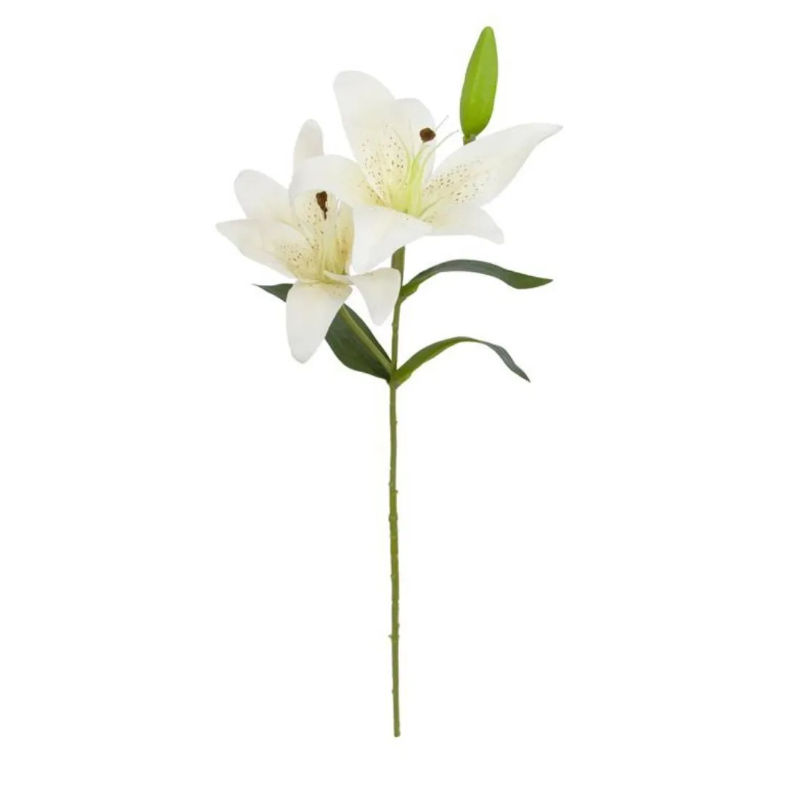

Lírio
Os lírios, conhecidos cientificamente como Lilium spp., são flores majestosas e elegantes que têm encantado as pessoas há séculos. Com suas pétalas delicadas e aromas perfumados, os lírios são apreciados em todo o mundo como símbolos de pureza, renovação e beleza. Essas flores exóticas vêm em várias cores e variedades, cada uma com suas características únicas que as tornam plantas deslumbrantes em jardins e arranjos florais.
Características e Variedades:

Cores Vibrantes: Os lírios vêm em uma ampla variedade de cores, incluindo branco, rosa, amarelo, laranja, vermelho e até mesmo roxo. Suas cores vibrantes tornam os lírios uma escolha popular para criar arranjos florais impressionantes.
Formas e Tamanhos: Com uma grande variedade de espécies e híbridos, os lírios apresentam diferentes formas e tamanhos de flores. Desde os lírios-trombeta com suas flores longas e trombeta, até os lírios-tigre com suas pétalas manchadas distintas, cada variedade oferece uma beleza única.
Aroma Perfumado: Muitas variedades de lírios possuem fragrâncias distintas e deliciosas. Seu perfume agradável enche o ar e adiciona uma dimensão extra ao encanto dessas flores.
Lírios Orientais e Asiáticos: Entre as variedades populares, destacam-se os lírios orientais e asiáticos. Os lírios orientais são conhecidos por suas flores grandes e aromáticas, enquanto os lírios asiáticos são mais compactos e vêm em uma variedade de cores vibrantes.
Habitat e Cultivo:
Clima: Os lírios são geralmente adaptáveis a uma variedade de climas, mas preferem áreas com invernos frios e verões moderados. Algumas variedades podem ser cultivadas em climas tropicais, mas é necessário fornecer condições especiais para o seu cultivo.
Solo: Eles preferem solos bem drenados e ricos em matéria orgânica. O pH do solo ideal para lírios é levemente ácido a neutro.
Luz: Os lírios prosperam em locais ensolarados, mas algumas variedades podem tolerar sombra parcial. Para uma floração exuberante, é essencial garantir que as plantas recebam pelo menos 6 horas de sol direto por dia.
Cuidados: O cultivo de lírios requer rega regular, especialmente durante os períodos de crescimento ativo e floração. A adubação adequada e a remoção de flores murchas ajudam a estimular novas florações.
Usos e Aplicações:
Arranjos Florais: Devido à sua beleza e perfume encantador, os lírios são frequentemente usados para criar arranjos florais elegantes e sofisticados.
Decoração: As flores de lírio são uma escolha popular para decoração de eventos como casamentos, celebrações e funerais, pois simbolizam amor, pureza e respeito.
Medicina Tradicional: Em algumas culturas, os lírios têm sido usados na medicina tradicional para tratar certas condições de saúde.
Jardinagem: Os lírios são plantas perenes que podem ser cultivadas em jardins, canteiros e recipientes, adicionando um toque exuberante de beleza ao paisagismo.

Conclusão: Os lírios são verdadeiramente flores espetaculares que deixam uma impressão duradoura com sua aparência elegante e fragrância encantadora. Sua beleza versátil e significados simbólicos têm cativado a humanidade há séculos. Cultivar lírios em jardins ou apreciar sua presença em arranjos florais proporciona uma experiência visual e olfativa única, que ilumina e enriquece nossas vidas com a beleza da natureza.